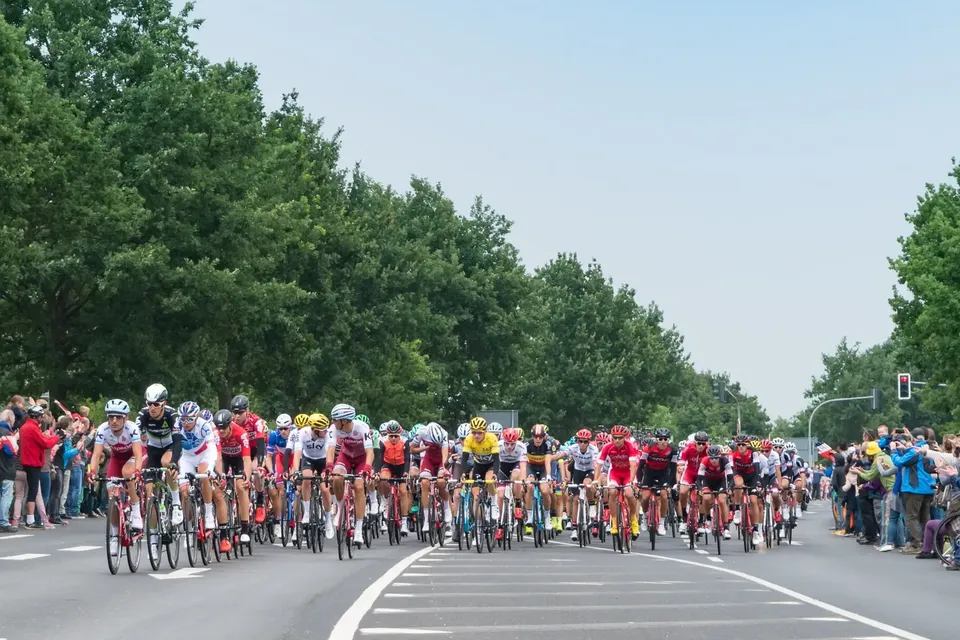

Recovery is where you get fitter: sleep, sore legs and easy days
Tour de France 2017 in Düsseldorf. Photo: Dronepicr, Wikimedia Commons, CC BY 3.0
You don't get fitter during the hard session – you get fitter in the hours and days after it. Once that sinks in, you start planning sleep, easy days and post-workout meals as carefully as intervals and long runs. Here is what happens in your body, how long muscle soreness really lasts, and which recovery methods live up to the hype – based on what sports science currently knows.
Stress plus rest equals progress
Training is a stimulus that knocks your body off balance: energy stores run down, muscle fibres pick up microscopic damage and your nervous system tires. During recovery, the body repairs that damage and adapts, so it copes better the next time it meets a similar load. That's why sports scientists don't think in terms of "training" and "breaks" but of a balance between stress and recovery that ultimately decides performance. A consensus statement by experts from training science, medicine and psychology puts it clearly: stress isn't just the sport itself, it's everything else life throws at you too – work, family, worries[1].
A few days of feeling tired and a little slow after a big training block are perfectly fine. Experts call this functional overreaching: a short-term overload that leads to a jump in performance once you've recovered. If recovery is missing for weeks on end, it tips into non-functional overreaching – performance stalls or drops, and in the worst case it develops into overtraining syndrome[2]. Recovery isn't a luxury. It's the part of training where the adaptation actually happens.
Sleep: the most powerful recovery tool you have
The American Academy of Sleep Medicine and the Sleep Research Society recommend that adults regularly sleep at least seven hours a night[3]. Athletes, of all people, often fall short: early sessions, late training slots, travel and pre-race nerves regularly push their sleep below that mark[4]. An international expert panel sees seven to nine hours as a guideline rather than a rule – how much sleep you need is individual, and how you feel in the morning is a good guide[4].
Two studies show just how much is at stake. In an experiment in the US, healthy adults were deliberately exposed to a cold virus. Those who had slept less than six hours a night in the week before were roughly four times as likely to get ill as those sleeping more than seven[5] – and in winter, every cold easily costs you a week of training. The second study comes from Stanford: players on the university basketball team spent as close to ten hours in bed every night as they could for several weeks. Afterwards they sprinted faster, shot more accurately, and felt more alert and in a better mood[6].
In everyday life, that means consistent bedtimes and wake-up times help more than the occasional lie-in, and after a high-mileage week or a race, an extra hour is well earned. Coaches also commonly advise leaving time to wind down after a hard evening session before the lights go out.
Muscle soreness: what's really going on
Delayed onset muscle soreness, or DOMS, isn't lactic acid building up, as people long believed. It comes from tiny injuries inside the muscle fibre, which the body answers with a local inflammatory response. It's especially typical after unfamiliar or so-called eccentric exercise – movements where the muscle brakes while it's being lengthened. For runners, the classic example is a long downhill. The pain usually peaks 48 to 72 hours after the session[7], which is why the second day after your first trail run often hurts more than the first.
Soreness is more than an unpleasant feeling. While it lasts, your range of motion is reduced, the muscle absorbs impact less well and produces less force. The body then tends to switch to unusual movement patterns, which puts extra strain on tendons and ligaments[8]. It's most common at the start of a season, when you ramp training back up after a quieter phase[8]. The good news: muscles learn fast. A single unfamiliar session protects the muscle against much of the damage the next time it faces a similar load – scientists call this the repeated bout effect[9]. Introduce new stimuli such as downhill running or strength work in small doses, and you'll be far less sore. Suitable exercises and how to dose them are in our strength training guide for runners.
What actually helps with soreness
Gentle movement relieves the pain most reliably – but only while you're moving[8]. That's why an easy jog or a relaxed spin the day after usually feels better than total rest. Stretching, on the other hand, showed no measurable effect on soreness in the research[8].
A large review compared the most common recovery methods. Massage came out on top, reducing soreness and the feeling of fatigue the most. Compression garments, water immersion and active recovery brought smaller but measurable benefits[10]. A foam roller is a form of self-massage: if you like it, use it, but it's not essential.
Be careful with ice baths as a daily habit. Cold relieves symptoms in the short term, but it also appears to dampen the signals the muscle uses to respond to training. In one study, strength and muscle mass grew noticeably less over twelve weeks of strength training when every session was followed by a cold water bath rather than active recovery with light movement[11]. For endurance training the picture is less clear, and researchers are still debating it. A sensible rule of thumb: save the cold for days when fast recovery really matters – say, between two race days – rather than after every ordinary session.
Easy days are training too
The most common mistake ambitious amateurs make isn't training too little – it's doing too much at a medium effort. Easy runs get too fast, so the hard sessions are no longer truly hard. Among nationally and internationally successful endurance athletes, the pattern is strikingly consistent: around 80 percent of sessions are genuinely easy, and only about 20 percent include hard efforts such as intervals[12]. "Easy" means you can talk in full sentences and finish feeling you could keep going for much longer.
Among coaches, one rest day a week is considered sensible for most amateurs, with a second one in weeks when work is stressful – after all, stress counts as load too[1]. After a hard race, the break can be longer. Cutting back before a key race is a topic of its own; more on that in “Tapering: train less, race faster”.
| Sample week | Session |
|---|---|
| Monday | Rest day or a 30-minute walk |
| Tuesday | Intervals or a tempo run – the week's hard session |
| Wednesday | Easy, 40 to 60 minutes at chatting pace |
| Thursday | Easy, or strength training |
| Friday | Rest day |
| Saturday | Short and easy, ideally with a group |
| Sunday | Long, steady run or a long ride |
This week is an example, not a plan for everyone. It follows the pattern from training research: a few hard sessions and plenty of easy endurance work[12].
Refuelling after training
After a long or hard session, your muscles' carbohydrate stores – glycogen – are partly depleted. If you're training again later the same day or the next morning, start refilling them as soon as you can after the session; sports nutrition experts recommend starting straight away when there are less than eight hours until your next workout[13]. If you have a full day before you train again, your normal meals are enough. How to fill your stores deliberately before a race is covered in “Carb loading made simple”.
To repair muscle, your body needs protein. The International Society of Sports Nutrition suggests roughly 20 to 40 grams of high-quality protein per meal, spread evenly every three to four hours, and 1.4 to 2.0 grams per kilogram of body weight per day in total[14]. That sounds like a lot but is easy to reach with ordinary food: yoghurt with oats after a run, lentils or fish at lunch, eggs, tofu or cheese in the evening. You don't need special supplements.
Signs you're short on recovery
The typical signs are unspectacular, which is why they're easy to miss: legs that stay heavy for days, familiar routes that feel harder than usual, times that get worse despite training, and a dip in mood[2]. Poor sleep and one cold after another often come with them. There is still no single lab value that reliably diagnoses overtraining[2]. An honest look at how you've been feeling over several weeks is the most reliable guide.
If several of these signs come together, a week with much less volume and no hard sessions usually does the trick. If your performance is still in the doldrums afterwards, see a doctor – iron deficiency or a lingering infection can also be behind it[2].
The bottom line
Three decisions make the biggest difference to your recovery. First, take sleep seriously, and in heavy training phases sleep more rather than less. Second, keep your easy days genuinely easy, so the hard sessions can do their job. Third, build up new stimuli such as hills or strength work gradually – that keeps soreness small, and you'll be ready to go again the next day.
Easy miles with a group
Many running groups go at chatting pace – perfect for your easy days. And when you're in shape: events for your next goal.
Sources
- Kellmann M. et al.: Recovery and Performance in Sport: Consensus Statement. Int J Sports Physiol Perform 2018;13:240–245. doi:10.1123/ijspp.2017-0759
- Meeusen R. et al.: Prevention, diagnosis, and treatment of the overtraining syndrome: joint consensus statement of the European College of Sport Science and the American College of Sports Medicine. Med Sci Sports Exerc 2013;45:186–205. doi:10.1249/MSS.0b013e318279a10a
- Watson N. F. et al.: Recommended Amount of Sleep for a Healthy Adult: A Joint Consensus Statement of the American Academy of Sleep Medicine and Sleep Research Society. Sleep 2015;38:843–844. PMC4434546
- Walsh N. P. et al.: Sleep and the athlete: narrative review and 2021 expert consensus recommendations. Br J Sports Med 2021;55:356–368. doi:10.1136/bjsports-2020-102025
- Prather A. A., Janicki-Deverts D., Hall M. H., Cohen S.: Behaviorally Assessed Sleep and Susceptibility to the Common Cold. Sleep 2015;38:1353–1359. PMC4531403
- Mah C. D., Mah K. E., Kezirian E. J., Dement W. C.: The effects of sleep extension on the athletic performance of collegiate basketball players. Sleep 2011;34:943–950. PMC3119836
- Hotfiel T. et al.: Advances in Delayed-Onset Muscle Soreness (DOMS): Part I: Pathogenesis and Diagnostics. Sportverletz Sportschaden 2018;32:243–250. doi:10.1055/a-0753-1884
- Cheung K., Hume P., Maxwell L.: Delayed onset muscle soreness: treatment strategies and performance factors. Sports Med 2003;33:145–164. doi:10.2165/00007256-200333020-00005
- McHugh M. P.: Recent advances in the understanding of the repeated bout effect: the protective effect against muscle damage from a single bout of eccentric exercise. Scand J Med Sci Sports 2003;13:88–97. doi:10.1034/j.1600-0838.2003.02477.x
- Dupuy O., Douzi W., Theurot D., Bosquet L., Dugué B.: An Evidence-Based Approach for Choosing Post-exercise Recovery Techniques to Reduce Markers of Muscle Damage, Soreness, Fatigue, and Inflammation: A Systematic Review With Meta-Analysis. Front Physiol 2018;9:403. PMC5932411
- Roberts L. A. et al.: Post-exercise cold water immersion attenuates acute anabolic signalling and long-term adaptations in muscle to strength training. J Physiol 2015;593:4285–4301. doi:10.1113/JP270570
- Seiler S.: What is best practice for training intensity and duration distribution in endurance athletes? Int J Sports Physiol Perform 2010;5:276–291. doi:10.1123/ijspp.5.3.276
- Burke L. M., Kiens B., Ivy J. L.: Carbohydrates and fat for training and recovery. J Sports Sci 2004;22:15–30. doi:10.1080/0264041031000140527
- Jäger R. et al.: International Society of Sports Nutrition Position Stand: protein and exercise. J Int Soc Sports Nutr 2017;14:20. PMC5477153
All sources accessed on 23 November 2026. The sample week and the tips on sleeping after evening training reflect practical coaching experience.


.jpeg){kind=link}